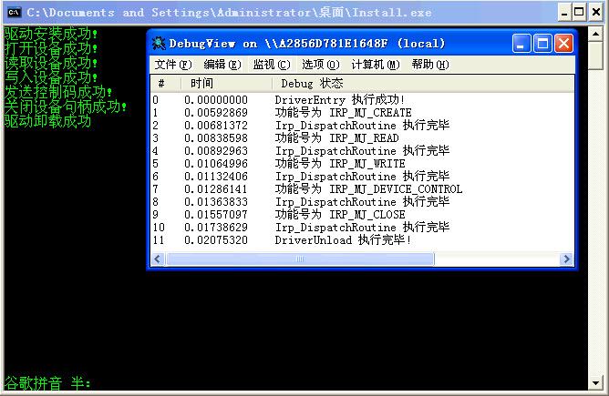

最简单的NT式驱动
文章目录
一直想着, 再写点东西. 本来关于驱动这方面的话, 网上资料很丰富. 相对保护模式来说吧!所以不是很想写了. 还有说到这个写点东西的话. 我发现我也不是很适合写文章. 写出来只有自己才能够看懂!
还有搞到这个写文章的适合用什么语言写就是一个比较纠结的地方了. 用汇编语言的话. 也不是不可以kmdkit包里面已经有了不少写汇编所需的头文件和lib文件, 但是还是不够的, 在写wdm和wdf的时候,我发现我还是得去自己整理头文件. 我倒..不过不要要求太多了, 毕竟kmdkit东西也是比较多了. 搞这个的也比较辛苦, 没有什么成就感. 其实语言的话. 无所谓了. 主要是能够解决一些问题吧. 大牛都是这样说的..
好吧, 看看写一个基本的驱动需要哪些东西!
首先我想3环的程序应该都写过吧, 其实这就是很好的入口点嘛, 写3环的程序经常打开文件或者其他东西, 一般都是调用CreateFile什么的!, 所以驱动的话一般会创建一个设备了. 只是一般来说了. 如果内核只是想做些猥琐的事情就退出, 也就不需要创建什么设备撒的. 当然. 现在假设是按照这个套路来的. 打开设备以后一般就是ReadFile, 和WriteFile. 这两个函数的话非常常用. 读取文件什么的. 当然你会看到它们不只是可以读取文件了.. 另外还有个不太常用的DeviceIoControl
完事以后一般就是CloseHandle了.. 用户层这边的代码的话, 应该都有写过. 主要是驱动这边的套路.. 来看看是怎么搞的!
/* 简单的驱动, 主要是感受下驱动的写法!这里是驱动端 编译方法参见makefile. */ #include <ntddk.h>
//设备扩展 typedef struct tagDeviceExt{ PDEVICE_OBJECT pDeviceObj; UNICODE_STRING StSzDeviceName; UNICODE_STRING StSzSysLinkName; }DEVICE_EXT, *PDEVICE_EXT;
//驱动卸载处理函数 VOID DriverUnload( PDRIVER_OBJECT pDriverObj ) { PDEVICE_EXT pDeviceExt = NULL; NTSTATUS Status; UNICODE_STRING StUSzSysLink = {0}; PDEVICE_OBJECT pNextObj = NULL;
pNextObj = pDriverObj->DeviceObject;
while (pNextObj){
pDeviceExt = (PDEVICE\_EXT)pNextObj->DeviceExtension;
StUSzSysLink = pDeviceExt->StSzSysLinkName;
//删除符号链接
Status = IoDeleteSymbolicLink( &StUSzSysLink );
if ( !NT\_SUCCESS(Status) ) {
KdPrint(( "删除符号链接失败\\n" ));
return;
}
//删除设备
IoDeleteDevice( pDeviceExt->pDeviceObj );
pNextObj = pNextObj->NextDevice;
}
KdPrint(( "DriverUnload 执行完毕!\\n" ));
}
//所有IRP消息的处理过程, 这个代码是允许被分页的 #pragma code_seg( “PAGE” ) NTSTATUS Irp_DispatchRoutine( PDEVICE_OBJECT pDeviceObj, PIRP pIrp ) { UCHAR type; PIO_STACK_LOCATION pStack = NULL;
//建立一个字符串数组与IRP类型对应起来
static char\* SzIrpName\[\] = {
"IRP\_MJ\_CREATE",
"IRP\_MJ\_CREATE\_NAMED\_PIPE",
"IRP\_MJ\_CLOSE",
"IRP\_MJ\_READ",
"IRP\_MJ\_WRITE",
"IRP\_MJ\_QUERY\_INFORMATION",
"IRP\_MJ\_SET\_INFORMATION",
"IRP\_MJ\_QUERY\_EA",
"IRP\_MJ\_SET\_EA",
"IRP\_MJ\_FLUSH\_BUFFERS",
"IRP\_MJ\_QUERY\_VOLUME\_INFORMATION",
"IRP\_MJ\_SET\_VOLUME\_INFORMATION",
"IRP\_MJ\_DIRECTORY\_CONTROL",
"IRP\_MJ\_FILE\_SYSTEM\_CONTROL",
"IRP\_MJ\_DEVICE\_CONTROL",
"IRP\_MJ\_INTERNAL\_DEVICE\_CONTROL",
"IRP\_MJ\_SHUTDOWN",
"IRP\_MJ\_LOCK\_CONTROL",
"IRP\_MJ\_CLEANUP",
"IRP\_MJ\_CREATE\_MAILSLOT",
"IRP\_MJ\_QUERY\_SECURITY",
"IRP\_MJ\_SET\_SECURITY",
"IRP\_MJ\_POWER",
"IRP\_MJ\_SYSTEM\_CONTROL",
"IRP\_MJ\_DEVICE\_CHANGE",
"IRP\_MJ\_QUERY\_QUOTA",
"IRP\_MJ\_SET\_QUOTA",
"IRP\_MJ\_PNP", };
pStack = IoGetCurrentIrpStackLocation( pIrp );
type = pStack->MajorFunction;
if ( type >= sizeof(SzIrpName) / sizeof(SzIrpName\[0\]) ) {
KdPrint(( "未知的功能号 %d\\n", type ));
}else {
KdPrint(( "功能号为 %s\\n", SzIrpName\[type\] ));
}
//一般分发函数的处理套路就是这样
pIrp->IoStatus.Information = 0;
pIrp->IoStatus.Status = STATUS\_SUCCESS;
IoCompleteRequest( pIrp, IO\_NO\_INCREMENT );
KdPrint(( "Irp\_DispatchRoutine 执行完毕" ));
return STATUS\_SUCCESS;
}
#pragma code_seg(“INIT” ) NTSTATUS DriverEntry( PDRIVER_OBJECT pDriverObj, PUNICODE_STRING pUSzRegPath ) { NTSTATUS Status; PDEVICE_EXT pDeviceExt = NULL; UNICODE_STRING StDeviceName = {0}; UNICODE_STRING StSysLinkName= {0}; PDEVICE_OBJECT pDeviceObj = NULL;
//填写分发函数地址
pDriverObj->DriverUnload = DriverUnload;
pDriverObj->MajorFunction\[IRP\_MJ\_READ\] = Irp\_DispatchRoutine;
pDriverObj->MajorFunction\[IRP\_MJ\_CLOSE\] = Irp\_DispatchRoutine;
pDriverObj->MajorFunction\[IRP\_MJ\_WRITE\] = Irp\_DispatchRoutine;
pDriverObj->MajorFunction\[IRP\_MJ\_CREATE\] = Irp\_DispatchRoutine;
pDriverObj->MajorFunction\[IRP\_MJ\_DEVICE\_CONTROL\] = Irp\_DispatchRoutine;
//初始化设备名和链接名
RtlInitUnicodeString(&StDeviceName, L"\\\\Device\\\\JoenDevice" );
RtlInitUnicodeString(&StSysLinkName, L"\\\\??\\\\LinkJoenDevice" );
//创建设备, 用于3环打开
Status = IoCreateDevice( pDriverObj, sizeof(DEVICE\_EXT), &StDeviceName, \\
FILE\_DEVICE\_UNKNOWN, 0, TRUE, &pDeviceObj );
if ( !NT\_SUCCESS(Status) ) {
return Status;
}
//创建符号链接用于3环打开
Status = IoCreateSymbolicLink(&StSysLinkName, &StDeviceName );
if ( !NT\_SUCCESS(Status) ) {
IoDeleteDevice( pDeviceObj );
return Status;
}
//设备对内存的操作方式
pDeviceObj->Flags |= DO\_BUFFERED\_IO;
//将设备对象和设备名称和符号链接名称保存到设备扩展中
pDeviceExt = (PDEVICE\_EXT)pDeviceObj->DeviceExtension;
pDeviceExt->pDeviceObj = pDeviceObj;
pDeviceExt->StSzDeviceName = StDeviceName;
pDeviceExt->StSzSysLinkName = StSysLinkName;
KdPrint(( "DriverEntry 执行成功!\\n" ));
return STATUS\_SUCCESS;
}
这个在网页上面发表代码真是太难受了.. 我倒.. html5会不会好些?? 驱动这边干得事情很简单. 一般套路. 自己跟着这个注释看明白没有问题.. 看看用户层的代码..
/* 简单的驱动, 主要是感受下驱动的写法!这里是3环,安装端! 编译方法参见makefile. */ #include <stdio.h> #include <windows.h> #include <winsvc.h> #include <conio.h>
#define DRIVER_NAME “TestNtDriver” #define DRIVER_PATH “TestNtDriver.sys”
/* 装载驱动程序 pDriverName :驱动程序名称 pDriverPath :驱动程序路径 成功返回非0, 失败返回0 */ int LoadNTDriver( char* pDriverName, char* pDriverPath ) { SC_HANDLE hServiceMgr=NULL; SC_HANDLE hServiceDDK=NULL; char SzDriverPath[MAX_PATH]; DWORD dwRet = 0;
//得到完整的驱动路径
GetFullPathName( pDriverPath, 256, SzDriverPath, NULL);
do {
//打开SCM管理器
hServiceMgr = OpenSCManager( NULL, NULL, SC\_MANAGER\_ALL\_ACCESS );
if ( hServiceMgr == NULL ) {
break;
}
//创建驱动所对应的服务
hServiceDDK = CreateService( hServiceMgr,
pDriverName, // 驱动程序的在注册表中的名字
pDriverName, // 注册表驱动程序的 DisplayName 值
SERVICE\_ALL\_ACCESS, // 加载驱动程序的访问权限
SERVICE\_KERNEL\_DRIVER, // 表示加载的服务是驱动程序
SERVICE\_DEMAND\_START, // 注册表驱动程序的 Start 值
SERVICE\_ERROR\_IGNORE, // 注册表驱动程序的 ErrorControl 值
SzDriverPath, // 注册表驱动程序的 ImagePath 值
NULL, NULL, NULL, NULL, NULL);
//如果服务安装失败
if( hServiceDDK == NULL ) {
dwRet = GetLastError();
//确实发生了错误
if ( dwRet != ERROR\_IO\_PENDING && dwRet != ERROR\_SERVICE\_EXISTS ) {
break;
}
//在其他情况下是因为该服务已经安装了. 这里只需要打开就可以
hServiceDDK = OpenService( hServiceMgr, pDriverName, SERVICE\_ALL\_ACCESS );
if ( !hServiceDDK ) {
break;
}
}
//开启此项服务
dwRet = StartService( hServiceDDK, 0, NULL );
} while ( FALSE );
if( hServiceDDK ) {
CloseServiceHandle( hServiceDDK );
}
if( hServiceMgr ) {
CloseServiceHandle( hServiceMgr );
}
return dwRet;
}
//卸载驱动程序 BOOL UnloadNTDriver( char * SzServiceName ) { BOOL bRet = FALSE; SC_HANDLE hServiceMgr=NULL;//SCM管理器的句柄 SC_HANDLE hServiceDDK=NULL;//NT驱动程序的服务句柄 SERVICE_STATUS SvrSta;
do {
//打开SCM管理器
hServiceMgr = OpenSCManager( NULL, NULL, SC\_MANAGER\_ALL\_ACCESS );
if( hServiceMgr == NULL ) {
break;
}
//打开驱动所对应的服务
hServiceDDK = OpenService( hServiceMgr, SzServiceName, SERVICE\_ALL\_ACCESS );
if ( hServiceDDK == NULL ) {
break;
}
//停止驱动
ControlService( hServiceDDK, SERVICE\_CONTROL\_STOP , &SvrSta );
//删除驱动
if( DeleteService( hServiceDDK ) ) {
bRet = TRUE;
}
} while ( FALSE );
if( hServiceDDK ) {
CloseServiceHandle( hServiceDDK );
}
if( hServiceMgr ) {
CloseServiceHandle( hServiceMgr );
}
return bRet;
} //============================================================================ int Jmain() { int bRet; HANDLE hDevice = INVALID_HANDLE_VALUE; byte byBuf[1024] = {0}; DWORD dwByteRead; DWORD dwByteWrite;
do {
//安装驱动
bRet = LoadNTDriver( DRIVER\_NAME, DRIVER\_PATH );
if ( bRet ) {
printf( "驱动安装成功!\\n" );
}else {
printf( "驱动安装失败!\\n" );
break;
}
hDevice = CreateFile("\\\\\\\\.\\\\LinkJoenDevice",GENERIC\_READ | GENERIC\_WRITE,0,
NULL,OPEN\_EXISTING, FILE\_ATTRIBUTE\_NORMAL,NULL );
if ( hDevice != INVALID\_HANDLE\_VALUE ) {
printf( "打开设备成功!\\n" );
}else {
printf( "打开设备失败!\\n" );
break;
}
if( ReadFile( hDevice, &byBuf, sizeof(byBuf), &dwByteRead, NULL ) ) {
printf( "读取设备成功!\\n" );
}else {
printf( "读取设备失败!\\n" );
break;
}
if ( WriteFile(hDevice,&byBuf, dwByteRead, &dwByteWrite, NULL ) ) {
printf( "写入设备成功!\\n" );
}else {
printf( "写入设备失败!\\n" );
break;
}
//发送控制码
if( DeviceIoControl( hDevice,
CTL\_CODE( FILE\_DEVICE\_UNKNOWN, 0x800, METHOD\_BUFFERED, FILE\_ANY\_ACCESS ),
&byBuf, dwByteRead, &byBuf, sizeof(byBuf), &dwByteRead, NULL ) ) {
printf( "发送控制码成功!\\n" );
}else {
printf( "发送控制码失败!\\n" );
break;
}
}while( FALSE );
if ( hDevice != INVALID\_HANDLE\_VALUE) {
if ( CloseHandle( hDevice ) ) {
printf( "关闭设备句柄成功!\\n" );
}else {
printf( "关闭设备句柄失败!\\n" );
}
}
//卸载驱动
if ( UnloadNTDriver( DRIVER\_NAME ) ) {
printf( "驱动卸载成功!\\n" );
}else {
printf( "驱动卸载失败!\\n" );
}
getch();
return 0;
}
这么简单两个小程序, 好像没有什么好说的.. 上个图看看, 在虚拟机上运行的样子..当然这边有源码下载
http://www.joenchen.com/JoenTools/LoadNtDriver.rar

文章作者 忆杰
上次更新 2011-10-09